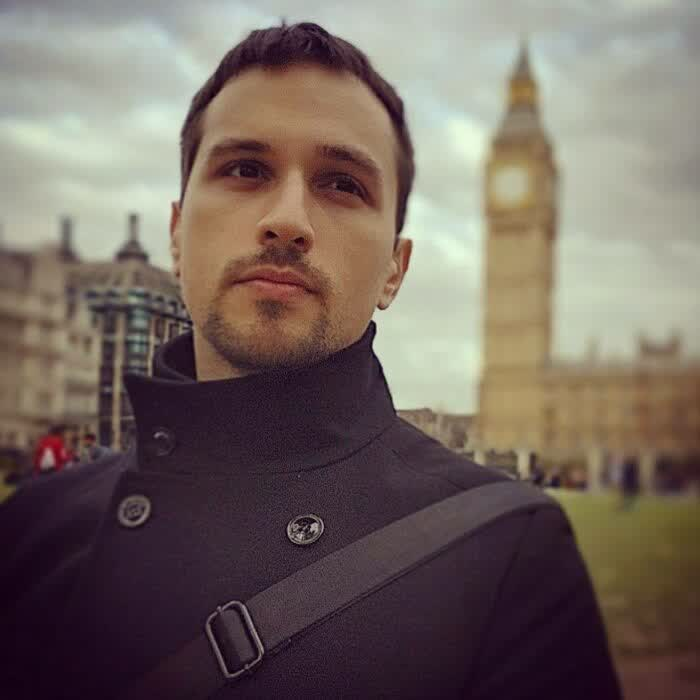

Psicólogos colegiados con amplia experiencia, comprometidos con tu bienestar emocional en el Casco Viejo de Bilbao.
Psicólogo y orientador educativo con años de experiencia trabajando con poblaciones en riesgo. Su sensibilidad ante la injusticia social le ha llevado a desarrollar proyectos de prevención como De Fobos y Deimos, el primer videojuego contra el bullying LGTBfóbico.
Su enfoque terapéutico se basa en el compromiso y el acompañamiento sostenido, especialmente con niños, niñas y adolescentes.

Psicólogo y terapeuta que ha dedicado su carrera profesional a la psicología en diversos ámbitos: clínicas, centros educativos, residenciales y entidades sociales. Su filosofía se centra en acompañar con cercanía y guía compasiva.
Su formación en terapia sistémica le permite abordar con profundidad las dinámicas de pareja y familia, siempre con un trato cálido y flexible.
En Jokabide creemos que imponer no forma parte de la buena psicología. Utilizamos el juego, las técnicas interpretativas y enfoques diversos para comprender la visión del mundo de cada persona. Nuestras sesiones son vivenciales, dinámicas y variadas, plenamente adaptadas a las necesidades de cada individuo.
Sea cual sea tu problema, siempre existe una solución. Hay muchas razones para acudir a un centro de psicología: ansiedad, depresión, trastornos de la alimentación, crisis vital, duelo. Pero también hay personas que acuden antes de que aparezcan dificultades, para trabajar su autoestima, el conocimiento de sí mismas o la inteligencia emocional.